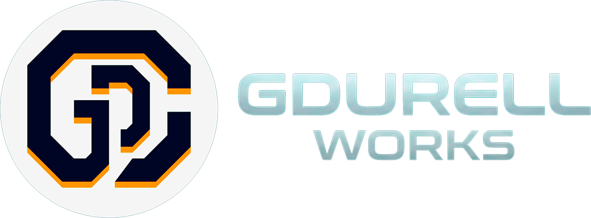

Screen-Space Frost Effect (URP)
Screen frosting effect for URP. Physical light refraction and customizable, dynamic screen freezing.

We are a studio specialized in Technical Art, Unity (URP/HDRP), and advanced Shaders & VFX design. We focus on delivering high-quality, performance-optimized tools and assets for game developers.
Contact UsScreen frosting effect for URP. Physical light refraction and customizable, dynamic screen freezing.
A highly optimized, "Plug & Play" stylized grass system for URP. Instantly add wind simulation and physics-free player interaction to your environments, perfectly suited for PC and Mobile.
Flexible, high-performance stylized dissolve effect to your custom models. Whether you need a weapon to turn into ash, a chest to materialize, or an enemy to melt in acid, this shader provides a lightweight, mobile-friendly solution that integrates easily into your production workflow.